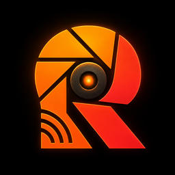
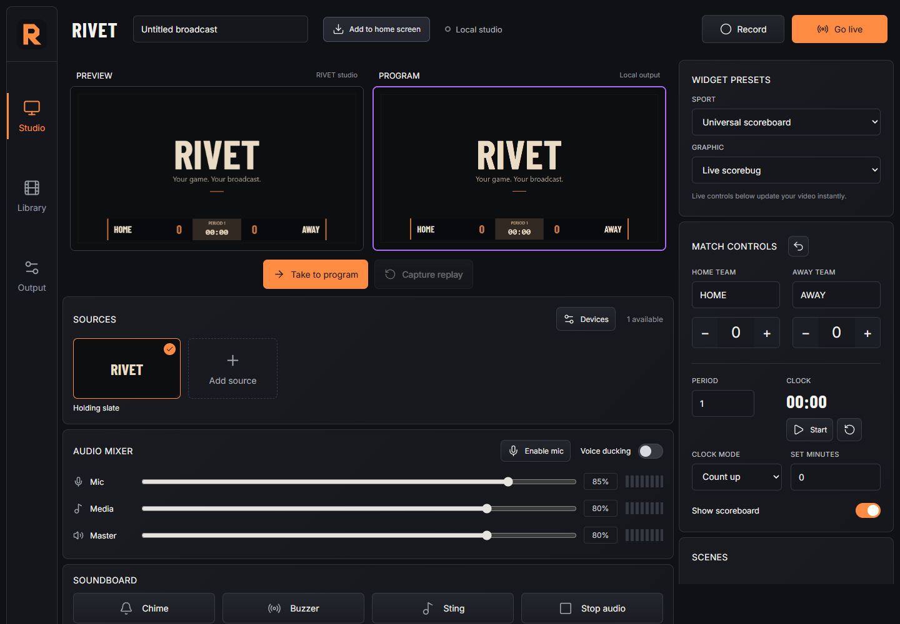

Local production
Switch cameras, graphics, scoreboards, scenes, and audio with no cloud required.

RIVETProduce, record, replay, transcode, and multistream from one device.

Switch cameras, graphics, scoreboards, scenes, and audio with no cloud required.
Send one local encode to as many as four RTMP or RTMPS destinations.
Keep recent action ready, save the moment, and bring it back into the show.
Record, manage, recover, and transcode locally while keeping the original media.
Install Termux on Android, then paste one command. RIVET installs its Ubuntu runtime, Python, FFmpeg, launcher, and shortcut files.
The first setup needs internet for missing packages. Production and transcoding work offline afterward.
curl -fsSL https://raw.githubusercontent.com/Devi8d0ne/RIVET/main/install.sh | bashYou provide each server URL and private stream key. RIVET never starts a broadcast automatically.
Fold5 is the development device. Test heat, battery, storage, frame rate, and audio sync for the full event length before production use.
Your sources, your recordings, your stream keys, your hardware.